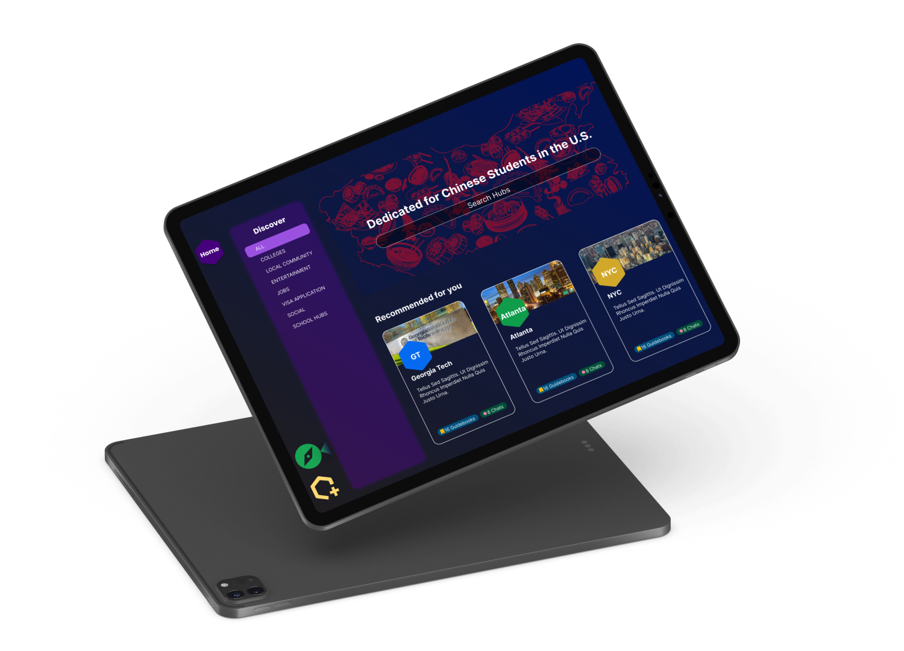

Projects
💰 Online Banking with Bitcoin
☘️ Green shift
🛶 Circle
🟨 2048 Ad free
📠Instant Notes
📠UNC Dorm Review
💬 Class-wide Twitter
🊠Alibaba Academic Research Paper Website
🇺🇸 Social media and polarization
🧠Application of CNN
About
Design
Development
Research
💰 Online Banking with Bitcoin
☘️Green shift

🛶 Circle
🟨 2048 Ad free
📠Instant Notes
📆UNC Dorm Review
💬 Class-wide Twitter
🊠Alibaba Academic Research Paper Website
🇺🇸 Does social media polarize our society?
🧠Application of Convolutional Neural Networks for Subcortical Structure Segmentation.